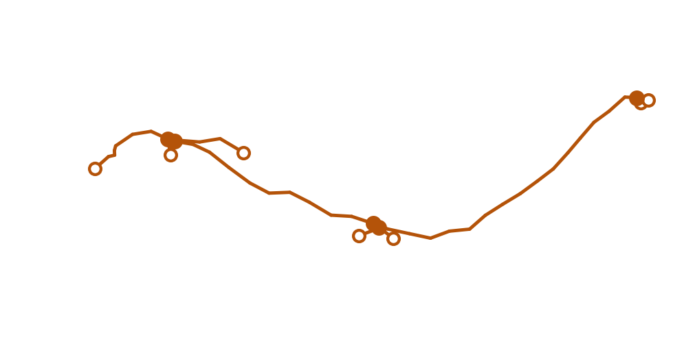
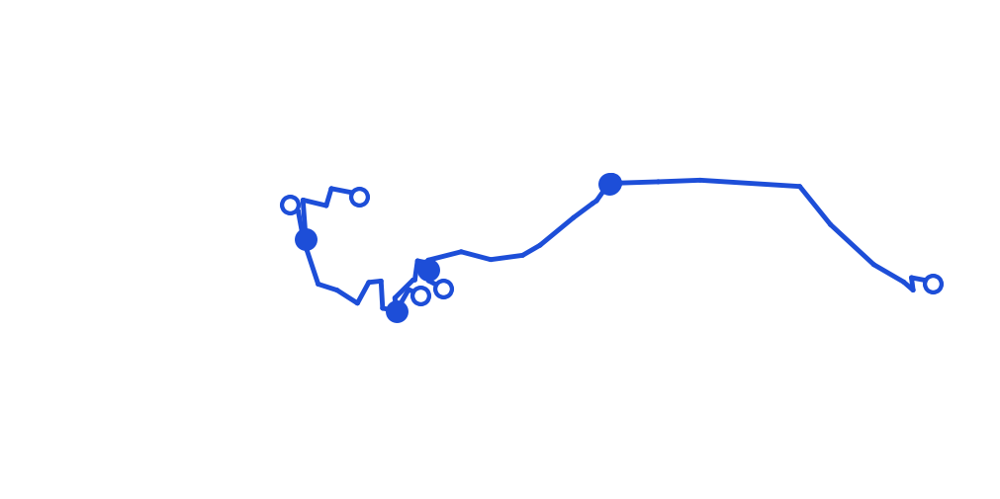

PART 5
站上會給你一個相似度分數。這一部分講那個分數能說什麼、不能說什麼——以及它底下那份資料到底是什麼
這是實驗室裡最常見的一種需求：你有一顆神經元的影像，想知道它是哪一型。VFB 上有一支現成查詢可以做這件事——它會找出形態最像的那些，附上分數。
拿 FlyCircuit 的 Cha-F-100205 去問，回來 61 筆。前十名長這樣：
| 分數 | 它是哪一型 |
|---|---|
| 0.70 | transmedullary neuron Tm2 |
| 0.69 | transmedullary neuron Tm9 |
| 0.69 | transmedullary neuron Tm1 |
| 0.66 | transmedullary neuron Tm1 |
| 0.66 | transmedullary neuron Tm3 |
| 0.64 | transmedullary neuron Tm3 |
| 0.64 | transmedullary neuron Tm1 |
| 0.63 | transmedullary Y neuron TmY18 |
前十名橫跨七種細胞型，而第一名到第十名只差 0.07。如果你要的是「它是哪一型」這個答案，這份結果沒有給你一個答案，它給了你七個——而且它們之間的分數差距，小到不足以把其中一個挑出來。
上表出自 out/nblast_example.json 的 top10（scripts/vfb_probe.py，2026-09-14），該檔存的是全部 61 筆；「橫跨七種細胞型」是那一支探針算出來的 n_types_in_top10，「只差 0.07」是 score_gap_rank1_to_rank10。
這支查詢叫 NBLAST——一種比較神經元形態的方法。在檢視器（v2.virtualflybrain.org）裡，它就在 Query For 區，名字是 Neurons with similar morphology to Cha-F-100205 [NBLAST]。
點下去之後，結果表的標題是：
61 Neurons with similar morphology to Cha-F-100205 [NBLAST mean score]
標題裡多了兩個字：mean score。這不是排版；它在告訴你分數是怎麼來的——NBLAST 比 A 對 B 跟比 B 對 A 得到的分數不一樣，而站上給的是兩個方向的平均。你自己重算的時候如果只算一個方向，數字就對不上。
這張結果表比 PART 3 那支多兩欄，一共七欄：
| 欄名 | PART 3 那支有嗎 | 裡面是什麼 |
|---|---|---|
Name | 有 | 比中的那一顆 |
Type | 沒有 | 它是哪一型——第 1 節那一欄 |
Gross_Type | 有 | 分類標籤 |
Template_Space | 有 | 對位到哪套標準腦 |
Imaging_Technique | 有 | 怎麼拍的 |
Images | 有 | 縮圖 |
Score ▼ | 沒有 | 相似度，預設由高到低排 |
這是 PART 3 第 3 節那句「欄位是跟著查詢走的」最清楚的例子——換一支查詢，表頭就換一組。
61 筆的分數落在 0.45 到 0.70 之間，而它們來自三套資料：
拿一顆螢光顯微鏡拍的神經元去問，回來的幾乎全是電子顯微鏡重建的。這正是這件事有用的地方——它把兩種完全不同的取像方式接了起來。但也因此，下一節那個問題才要緊：兩種來源的東西，是被化約成什麼才拿來比的？
標題與七個欄名由 scripts/browser_probe.py 在 2026-09-14 用真的瀏覽器跑完這支查詢後拍下，原始輸出在 out/ui/nblast_results.json；分數範圍與三套來源的筆數出自 out/nblast_example.json（scripts/vfb_probe.py，同日，全部 61 筆都取回，取回列數等於它自己報的數字）。
NBLAST 不是拿影像比，也不是拿三維網格比。它比的是骨架——把神經元化約成一串有父子關係的點。分數的一切性質都是從這件事來的。
那份骨架可以直接下載：在該筆資料的資訊面板底下，Downloads 區的 Skeleton (SWC)（PART 3 第 6 節）。所以「站上說這兩顆像」這件事，是可以自己去查的——這也是接下來兩節要做的事。
Cha-F-100205 出自 FlyCircuit，而 FlyCircuit 自己也釋出骨架。所以這一顆有兩份骨架：FlyCircuit 釋出的那一份，以及 VFB 提供下載的那一份。兩份擺在一起量，結果是這樣：
| FlyCircuit 釋出的 SWC | VFB 提供下載的 SWC | |
|---|---|---|
| 點數 | 48 | 49 |
| 分支點 | 5 | 4 |
| 端點 | 7 | 6 |
| 半徑欄 | 全部是 0 | 全部是 NA |
| 產生工具（寫在檔頭） | TREES toolbox | nat::write.neuron.swc |
分支點的個數不一樣。而分支點的個數，是換一個座標系不會改變的量——所以VFB 那一份不是 FlyCircuit 那一份的座標轉換，它是另外做出來的一份。


兩張圖由 scripts/make_part5_figures.py 從本機 FlyCircuit 的 FC12_swc/Cha-F-100205_swc.swc 與 VFB 的下載網址各讀一份畫出，數字存在 out/part5_figures.json（2026-09-14）。兩張各自把座標置中、做主成分旋轉、再除以自己的最大跨距，用同一個裁切框——所以整體姿態不能拿來比，能比的是點的個數。這不是解剖方位圖：兩份資料在不同的座標框裡（PART 1 第 6 節），本頁不宣稱任何方位。
NA）。所以粗細沒有進到這個比較裡——兩顆形狀一樣、粗細差十倍的神經元，在這個框架下是一樣的。
PART 1 的作業單問過這顆神經元的 Aligned To 欄，答案是兩套：JFRC2 與 JRC2018U。所以 VFB 上這一顆有兩份骨架，一個座標系一份。兩份也可以各自下載下來量：
| VFB／JFRC2 | VFB／JRC2018U | |
|---|---|---|
| 點數 | 49 | 49 |
| 分支點、端點 | 4、6 | 4、6 |
| 度數序列 | 完全相同 | |
| 總路徑長 | 143.73 | 138.34 ← 差 3.8% |
形狀統計一模一樣，長度差 3.8%。這正是 PART 1 第 6 節講的橋接：同一顆神經元被搬到另一個座標系，樹的結構原封不動，但每一段的長度被非剛體對位拉扯過。
兩欄數字出自 out/part5_figures.json 的 vfb_jfrc2 與 vfb_jrc2018u（scripts/make_part5_figures.py，2026-09-14，兩份都從 VFB 的下載網址直接讀）。路徑長只在 VFB 這兩份之間相比——跟 第 4 節那份本機 SWC 不能比，那一份在 FlyCircuit 自己的座標框裡，單位尺度不同。
把前面五節收起來：
| 它能說 | 它不能說 |
|---|---|
| 排序。0.70 的那一顆，形態上比 0.45 的那一顆更接近你的目標。這是它設計來做的事。 | 判定型別。前十名橫跨七種型、分數只差 0.07。要下判定，門檻是你訂的，理由也是你的。 |
| 跨取像方式的線索。它把螢光顯微鏡的一顆接到電子顯微鏡重建上，這是別的方法不容易做到的。 | 「這兩顆一樣粗」之類的話。半徑沒有進到比較裡（第 4 節）。 |
| 一個可以重跑的數字——只要你說明是拿哪一份骨架、哪一個座標系、哪一天算的。 | 「我自己算也會是這個數字」。骨架不同（48 對 49 點）、方向不同（站上給的是mean score），兩者都會讓你的數字對不上。 |
這一節的數字全部是前面出現過的，不是新查的：0.07、0.45、0.70 出自 out/nblast_example.json（第 1 節與第 2 節）、48 與 49 出自 out/part5_figures.json（第 4 節）。皆於 2026-09-14 取得。
這張表可以直接接到 PART 4 第 6 節那份「方法段該寫什麼」的清單——對相似度分數來說，那五件之外還要多寫兩件：哪一份骨架，以及分數是哪個方向算的。
三步，前兩步在瀏覽器裡做得完；第三步要下載一個檔案。
v2.virtualflybrain.org）的 Term Info 面板往下找 Query For 區，點 Neurons with similar morphology to Cha-F-100205 [NBLAST]。61 Neurons with similar morphology to Cha-F-100205 [NBLAST mean score]——注意最後那兩個字 mean score。Score ▼ 欄，預設由高到低排；左邊第二欄是 Type。Type 讀一遍，你會數到不只一種——第 1 節那張表就是這麼來的。然後問自己一個問題：如果要你據此判定你手上那顆是哪一型，你會怎麼訂門檻？Downloads 區，點 Skeleton (SWC)。# SWC format file，而半徑那一欄全部是 NA。這一節指名的每一個欄位名、標題與畫面上的字串，都由 scripts/browser_probe.py 在 2026-09-14 用真的瀏覽器把前兩步做過一遍拍下來（out/ui/nblast_results.json 與 out/ui/terminfo_v2_neuron.json）；第三步那個檔案的內容由 scripts/make_part5_figures.py 直接讀取並記進 out/part5_figures.json。